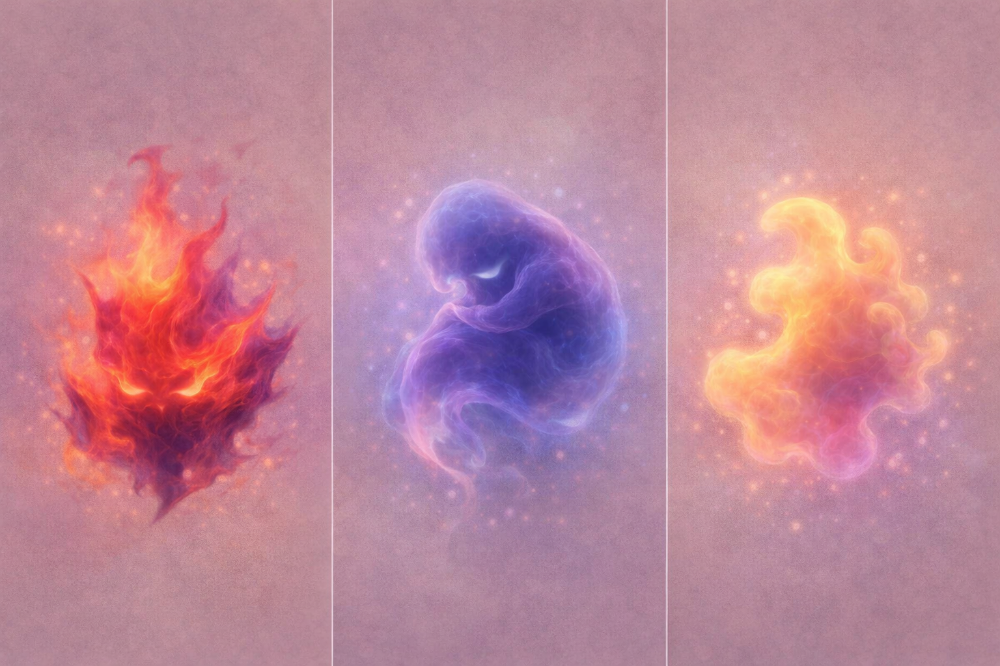

En børnebogsserie om at mærke, forstå og bruge sin egen stemme
Et univers for børn – og de voksne omkring dem. Her handler det ikke om rigtigt og forkert, men om at mærke det, der allerede er der.
Før børn forstår ord, forstår de rytme, nærvær og gentagelse.
Genkendelige situationer — følelser uden forklaring, men med plads.
En historie om Alma, der opdager at hendes stemme ikke er noget hun skal finde — men noget hun skal turde bruge.

Bankeren er ikke en figur. Det er det, man mærker indeni — før man har ord for det. En fornemmelse. Et signal. Noget der banker.
Lange før de har ord for det. Det her univers giver dem et sprog — ikke til at forklare, men til at blive i det.
Vi voksne fortæller dem tit at det nok ikke er så slemt. Men det de mærker, er rigtigt. Det er værd at lytte til.
Børn der lærer at lytte til sig selv, er bedre rustet til grænser, relationer og at finde deres egen stemme.
Universet bygger på forskning i kropslig opmærksomhed og tidlig emotionel regulering — præsenteret i tilgængeligt format.
De tre spor er designet til at bygge oven på hinanden — fra sansning og tryghed til selvforståelse og handling.
Projektet udvikles med fokus på virkelige erfaringer fra børn og familier — og i dialog med organisationer som Mødrehjælpen.
"Interesseret i samarbejde om børneunivers?"